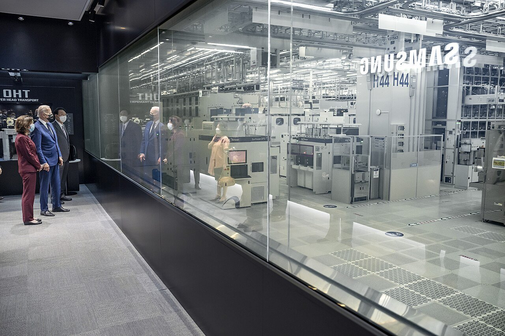
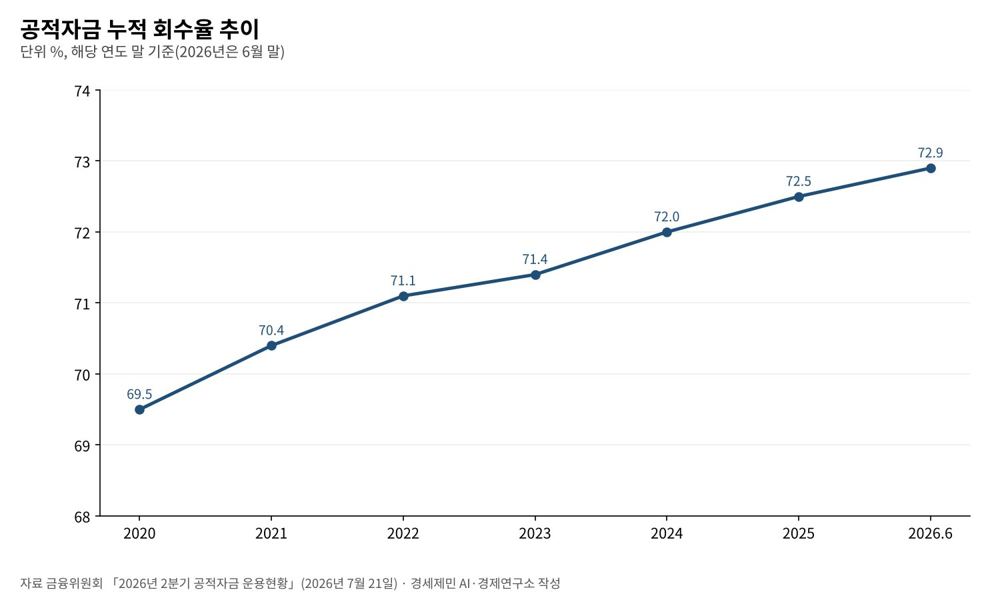
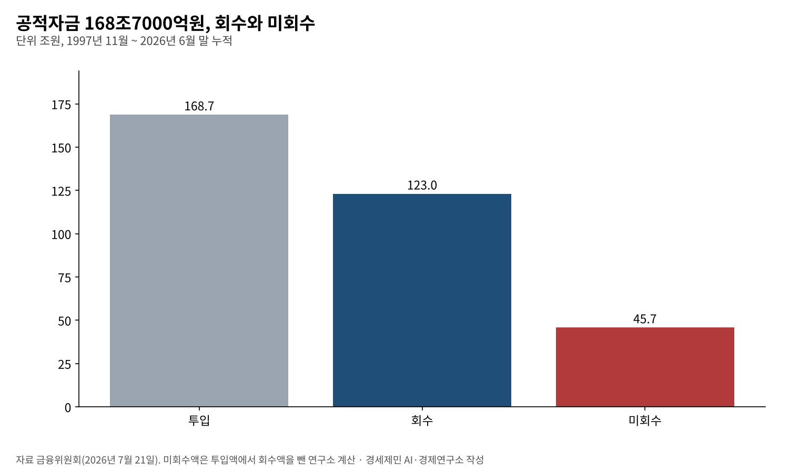

[경세제민] 공적자금 168조7000억원의 교훈, 첨단산업 지원과 금산분리의 경계
1997년 11월부터 부은 공적자금, 29년 지나 123조원 회수하고 45조7000억원 남아
국민성장펀드 30조원 시대, 국민 돈이 들어가면 감시와 수익도 국민 몫이어야
특정 지주회사 구조에 맞춘 규제 완화 요구, 원칙과 조건을 다시 묻는다
1997년 11월 21일 정부는 국제통화기금(IMF)에 구제금융을 신청한다고 발표했다. 나라 빚은 1500억달러를 넘었고 외화는 40억달러에 못 미쳤다. 이듬해 경제성장률은 -6.9%였다(국가기록원).
그 뒤 정부는 금융기관을 살리는 데 공적자금 168조7000억원을 부었다. 금융위원회 집계로 올해 6월 말까지 123조원을 거둬 회수율은 72.9%다. 29년이 지났지만 45조7000억원은 아직 돌아오지 않았다.
반도체 호황 속에서 첨단산업 투자를 명분으로 지주회사와 금융 규제를 풀자는 요구가 다시 나온다. 그 요구를 볼 때 1997년의 장부를 함께 펴야 한다. 이익과 손실을 누가 나눠 지는지가 핵심이다.

1997년, 국민이 낸 수업료
국가기록원 기록을 보면 IMF는 1997년 12월 3일 210억달러 지원을 승인했다. 세계은행과 아시아개발은행, 미국·일본 등 7개국 지원을 더하면 모두 550억달러 규모다.
1998년 1월 KBS의 캠페인으로 금 모으기가 본격화했다. 석 달 동안 351만명이 금 227톤을 냈다. 당시 값으로 18억달러어치다. 결혼반지와 돌반지가 외화로 바뀌었다.
외환보유액은 1997년 39억달러까지 떨어졌다가 1998년 말 520억달러로 회복했다. 정부는 2000년 12월 4일 위기 극복을 발표했다. 국민은 일자리와 소득을 잃는 값을 먼저 치렀다.
위기의 뿌리에는 차입에 기댄 대기업의 과잉 투자가 있었다. 금산분리는 그 경험에서 힘을 얻었다. 산업자본이 금융회사를 사금고처럼 쓰지 못하게 막고, 금융이 계열사의 위험에 끌려가지 않게 하는 원칙이다.
168조7000억원, 29년의 장부
금융위원회가 7월 21일 낸 2분기 공적자금 운용현황을 보면 1997년 11월부터 투입한 공적자금은 168조7000억원이다. 6월 말까지 누적 회수액은 123조원이다.
회수율은 2020년 말 69.5%에서 2021년 70.4%, 2022년 71.1%, 2023년 71.4%, 2024년 72.0%, 2025년 72.5%로 올랐다. 올해 6월 말은 72.9%다. 한 해에 0.3~0.9%포인트씩 오르는 속도다.
올해 2분기 회수액은 5901억원이다. 그 가운데 5601억원이 배당이다. 정부가 가진 기업은행·산업은행·수출입은행 지분 배당 4010억원, 예금보험공사의 서울보증보험 배당 1591억원이다.
이 속도라면 남은 45조7000억원 가운데 상당액은 끝내 돌아오지 않는다. 그 몫은 재정과 금융권의 부담으로 남는다. 위기의 손실은 사회가 나눠 졌고 회복의 과실은 주주에게 갔다(연구소 판단).

국민성장펀드, 이미 열린 정공법
정부는 첨단산업 자금을 정책금융으로 대고 있다. 금융위원회 자료로 국민성장펀드의 지원 목표는 30조원이다. 직접투자 3조원, 간접투자 7조원, 인프라 투융자 10조원, 저리대출 10조원으로 짜였다.
1~7월 누적 승인액은 16조3000억원, 24건이다. 지방 비중이 42.4%다. 7월 30일에는 고대역폭메모리(HBM) 테스트 장비를 만드는 테크윙의 충남 천안 공장 증설에 500억원 저리대출을 승인했다.
일반 국민이 투자하는 국민참여성장펀드도 나왔다. 금융위원회는 10월 16일 2차 판매에서 5198억원을 모았다고 밝혔다. 정책금융과 국민 자금이 첨단산업으로 흐르는 길은 규제를 풀지 않고도 이미 열려 있다.
중요한 차이가 있다. 대출과 펀드 투자는 조건과 심사, 보고가 따른다. 돈을 대는 쪽이 돈을 쓰는 쪽을 들여다본다. 지배구조 규제를 푸는 일은 돈은 끌어오되 그 감시를 줄이는 방향으로 흐르기 쉽다.
규제 완화 요구, 누구에게 맞춘 옷인가
지주회사 체제는 지배구조를 단순하게 하려고 만든 제도다. 그래서 손자회사가 다시 회사를 거느릴 때는 지분 요건을 엄격하게 둔다. 지분을 덜 갖고도 아래 회사를 지배하는 피라미드를 막기 위해서다.
이 요건을 첨단산업에 한해 낮추자는 요구는 지분을 덜 내고도 자회사를 지배하는 구조를 연다. 나머지 지분을 정책펀드가 채우면 손실 위험은 공공이 나눠 지고 지배권은 그대로 남는다.
이런 규정은 지주회사 체제를 갖춘 일부 그룹에만 혜택이 간다. 지주회사가 아닌 기업과 중소 장비·소재 기업에는 해당이 없다. 산업 전체를 키우려면 세액공제와 설비 보조, 정책금융처럼 문을 넓게 여는 수단이 맞다.
반도체 기업의 이익은 크다. 트렌드포스 집계로 SK하이닉스의 2분기 D램 매출만 385억9000만달러다. 이익이 넘칠 때 필요한 것은 감시를 줄인 외부 자금이 아니라 공정한 조건의 자금이다.

국민 돈이 들어가면 국민이 묻는다
정부가 규제를 손본다면 네 가지 조건을 걸어야 한다. 첫째는 대칭이다. 공공 자금이 손실을 함께 지는 만큼 이익도 같은 비율로 나눠야 한다. 손실만 사회화하는 구조는 1997년의 되풀이다.
둘째는 정보다. 정책펀드가 들어간 회사는 투자 계획과 성과를 정기적으로 공개해야 한다. 셋째는 보편성이다. 특정 그룹 구조에 맞춘 예외가 아니라 같은 산업의 모든 기업이 같은 조건을 얻어야 한다.
넷째는 환원이다. 공적 자금이 거둔 수익은 공적자금 상환이나 국민연금처럼 국민 몫으로 돌아가야 한다. 연구소는 미회수 공적자금 규모만큼의 국민투자 계정을 두고 수익을 환원하는 방안을 제안한다.
확인하지 못한 것
첨단산업 지주회사 규제 완화가 법 개정이나 정부안으로 어디까지 갔는지는 이 글을 쓴 10월 21일까지 정부 원문으로 확인하지 못했다. 공정거래법 조문 원문도 열지 못했다. 확인되면 고쳐 싣는다.
금 모으기의 참여 인원과 금 무게는 국가기록원 한 곳의 기록이다. 1997년 대기업 부채비율과 계열 금융사 대출 규모는 이번에 원문으로 확인하지 못해 뺐다.
금산분리는 1997년 국민이 큰 값을 치르고 다진 원칙이다. 첨단산업을 키우는 일과 그 원칙을 지키는 일은 맞서지 않는다. 국민 돈이 들어가는 곳에 국민의 눈이 함께 들어가면 된다.
참고문헌
기관 자료
- 금융위원회, 「2026년 2분기 공적자금 운용현황 — 2026년 6월말 누적 총 123.0조원 공적자금 회수(회수율 72.9%)」(보도자료), 2026년 7월 21일. https://www.fsc.go.kr/no010101/87366
- 금융위원회, 「2025년 2분기 공적자금 운용현황」(보도자료), 2025년 7월 30일, 정책브리핑 게재. https://www.korea.kr/briefing/pressReleaseView.do?newsId=156723472
- 금융위원회, 「국민성장펀드가 디스플레이 산업의 초격차와 HBM 공급망 경쟁력 강화를 지원합니다」(보도자료), 2026년 7월 30일. https://www.fsc.go.kr/no010101/87442
- 금융위원회, 「제2차 국민참여성장펀드, 5,198억원을 모집하고 판매종료」(보도자료), 2026년 10월 16일. https://www.fsc.go.kr/no010101/87944
- 국가기록원, 「IMF 외환위기 극복」(기록으로 보는 대한민국). https://theme.archives.go.kr/next/koreaOfRecord/imf.do
연구 논문과 보고서
- TrendForce, "DRAM Industry Revenue Rises 59.5% QoQ in 2Q26 as Supply Expansion Continues to Lag Demand Growth", 2026년 9월 7일. https://www.trendforce.com/presscenter/news/20260907-13219.html
언론 보도
- (이번 회차에 새로 인용한 언론 보도 없음)
[사진 출처]
- [사진1] The White House, "P20220520AS-000033-2 (52196618699).jpg", 위키미디어 공용, 퍼블릭 도메인. https://commons.wikimedia.org/wiki/File:P20220520AS-000033-2_(52196618699).jpg
© 경세제민 AI·경제 연구소. 인용할 때는 출처를 밝혀 주십시오.